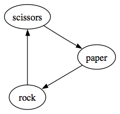
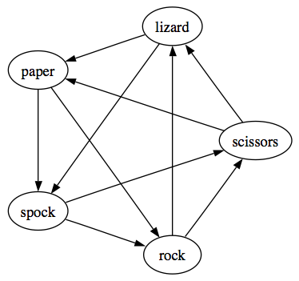

This project is based on, first and foremost, the concept of transitivity. A transitive relation is one such that “A relation $R$ on a set $X$ is transitive if, for all elements $a$, $b$, $c$ in $X$, whenever $R$ relates $a$ to $b$ and $b$ to $c$, then $R$ also relates $a$ to $c$.”1. This can be simplified in the context of transitive/intransitive games to say that if strategy A is preferred to B, and strategy B is preferred to C, then strategy A is also preferred to C.
A very simple example of an intransitive order is one presented in the children’s game Rock, Paper, Scissors. In this game, there is a loop of preference wherein there is no best option to pick, and no certain way to win the game if both players are playing fairly2. This preference loop can be clearly shown in the diagram below,
where rock blunts scissors, scissors cut paper and paper wraps rock. This is the simplest game from a long list of variations of rock paper scissors, as rock paper scissors has only three different possible moves, or “weapons”. These variations work exactly the same as the original rock paper scissors as long as the game contains an odd number of weapons where each weapon beats half the weapons, and is beaten by the other half3.
There are many different versions with varying numbers of weapons. The game with the most moves that has been published so far has 101 different weapons and is named RPS-101, created by David C. Lovelace in 20064. This version can be played by clicking this link, which will take you to a simple website coded in python by programme leader at Exeter College, Adam Clement.
Another, much simpler version of this is a game with 5 different moves, named “Rock Paper Scissors Spock Lizard”, or RPSSL created by Sam Kass and Karen Bryla5. To make it clearer, we have written and provided a copy of a python program that allows you to play RPSSL against the computer, provided below:
And here is an image detailing how each weapon beats exactly half of the other weapons.
Increasing the number of weapons has the effect of decreasing the chance of a draw, while simultaneously increasing the intricacy of the game. We can calculate the probability that both players choose the same weapon/gesture using only the number of weapons in the game. If the number of weapons used in a game is $a$, then the probability that the result of the game is a draw is $\frac{1}{a}$. In a regular game of rock paper scissors, this probability is $\frac{1}{3}$, and in RPS-101 this probability is $\frac{1}{101}$, which is clearly a much lower probability than in the original game3.
However, sometimes something may seem to be an intransitive order, but given a little more research it is found not to be. An example of this can be found in an article titled Transitivity of Preferences6, where hypothetical student, Jim, meets with an advisor to discuss his dissertation. The apparent intransitive order appears when the advisor has to choose between two options of venues to meet at. Jim observes that when he offered to meet her at venue A or B, his advisor chose to meet at A $\frac{2}{3}$ of the time, when offered venue B or C, she chose B $\frac{2}{3}$ of the time and when offered venue A or C, she chose C $\frac{2}{3}$ of the time. From the data that Jim gathers, it seems that the advisor’s choices do indicate an intransitive preference. Once he brings this up with his advisor however, she explains that her choices were impacted by where in the city she was teaching on the day that Jim asked to meet, hence she chose the venue that was closest to where she would be on the day of the meeting. This tells us that her choice was not an intransitive one, but a consistent criteria-based decision.